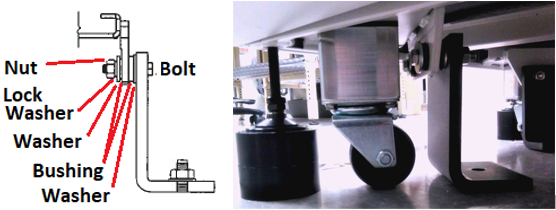

Perform these steps to install the seismic mounting brackets with the DxI in it its final aligned position on the DxA automation line. The C58707 Kit contains 35mm caster spacers and seismic mounting brackets, and the C52434 kit contains longer 70mm spacers and brackets. The kit used depends on the height of the Automation Track. The 35mm kit will be used in most cases.
With the DxI at its aligned position on the automation line, mount four seismic mounting brackets to the attachment plates on the bottom of the DxI. (2 bolts / 2 nuts / 2 lock washers / 4 rubber bushings / 4 flat washers, each).
Figure 283: DxI with 70mm Castor Spacers and Seismic brackets mounted.

Use the included shims between the brackets and the floor if the instrument height adjustment requires them.
Use a pen through the floor mounting bolt hole in each bracket to mark the location on the floor for drilling the mounting bolt inserts.
Move the instrument away from the floor mounting location (Loosen/remove the brackets if necessary).
Drill/install the mounting inserts into the floor, following the instructions included with the inserts. (The floor inserts and bolts are not included in the seismic mounting kit)
Move the instrument back into position, adjust the height, and install the brackets and shims.